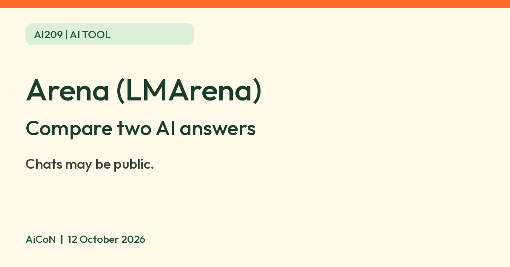

Arena (LMArena): compare two anonymous AI answers, and why your chats may become public
Arena shows two anonymous AI answers to your prompt and asks you to vote. Arena says your conversations may be disclosed publicly, so keep prompts harmless.

What it is
Arena (formerly LMArena, at arena.ai) is a website where you type one prompt, get answers from two anonymous AI models side by side, and vote for the better one. Arena's FAQ says model names are revealed after you vote, and that votes feed a public AI leaderboard.
Is it free?
Arena's pages do not show a price list for ordinary users. In its June 2026 blog post Arena says your votes help "sustain a free and independent platform", and its 2025 blog post says the leaderboard will always be shared freely as a public service. We did not find a pricing page or a plain "free plan" statement, so we cannot give you usage limits or say whether any feature costs money. Arena's terms do mention fees for paid services in general.
Read this before you type anything
- The Arena home page says your conversations and certain personal information "will be disclosed to the relevant AI providers and may otherwise be disclosed publicly".
- It tells you not to submit personal or sensitive information you would not want shared publicly.
- Its FAQ says conversations may be shared in public research datasets and with model providers, and that shared data is de-identified. The home page also says prompts may be sent to AI providers later for automated evaluation, and you can opt out of that use by writing to privacy@arena.ai. This is not a promise that opting out stops all other sharing.
- AiCoN advice: use it only for harmless test prompts. No names, phone numbers, health, money or work details.
Who can use it
- Arena's terms say you must be at least 18 or the legal age to form a binding contract.
- The FAQ says everyone is welcome, from enthusiasts and students to researchers and everyday users.
- India: Arena's pages do not name India or list countries. The terms bar people who are barred under US law. We could not confirm India availability from an official page, and its international-users section makes no promise that the service is available or appropriate outside the US. A page loading is not proof of eligibility.
How it works
- Battle mode: two anonymous models answer, you vote, then the names show. Only votes cast while models are anonymous count toward the official ranking, per the FAQ.
- Side by Side mode: you pick the models yourself. Arena says those votes do not count toward the leaderboard, but prompts and votes are still collected for research.
- The home page warns that inputs are processed by third-party AI and responses may be inaccurate.
The FAQ says models are anonymously resampled after each vote, even in the same chat, and previous context may not carry across model matchups. It also says Direct Mode has no voting but still collects prompts for research. Changing modes does not remove the privacy warning.
A safer first comparison
- Read the sharing notice and terms before using the site.
- AiCoN example: use an invented prompt such as "Explain why the sky looks blue in two short paragraphs." Do not include private details or upload personal files.
- In Battle mode, compare the answers and vote before looking at model names.
- Check factual answers against reliable sources rather than trusting a vote or ranking.
Frequently asked questions
Is my chat private?
No. Arena says conversations may be shared with AI providers and disclosed publicly.
Do I need an account?
The terms say certain features may require an Arena or approved third-party account and may be unavailable to unauthenticated users. They do not identify which features require it. We did not test sign-in or access.
Is it a good everyday chatbot?
Arena describes it as a place to compare and rate models. AiCoN advice: do not treat it as a private workspace. Check any other chatbot's own privacy settings and terms before sharing private information.
What changed since this post?
Home privacy notice, FAQ, terms and the two blog posts rechecked 12 October 2026. Added the terms' limited account guidance, Direct Mode research collection and resampling/context caveats. Automated-evaluation opt-out is scoped to that use, not all disclosure. Blog-based free wording is not a guarantee for every feature. Numeric usage limits and India eligibility remain unverified. No prompt, vote, login or opt-out was tested.
Sources: Arena home privacy notice, Arena FAQ, Arena terms of use, Arena blog, June 2026, Arena blog, September 2025. Checked 12 October 2026.